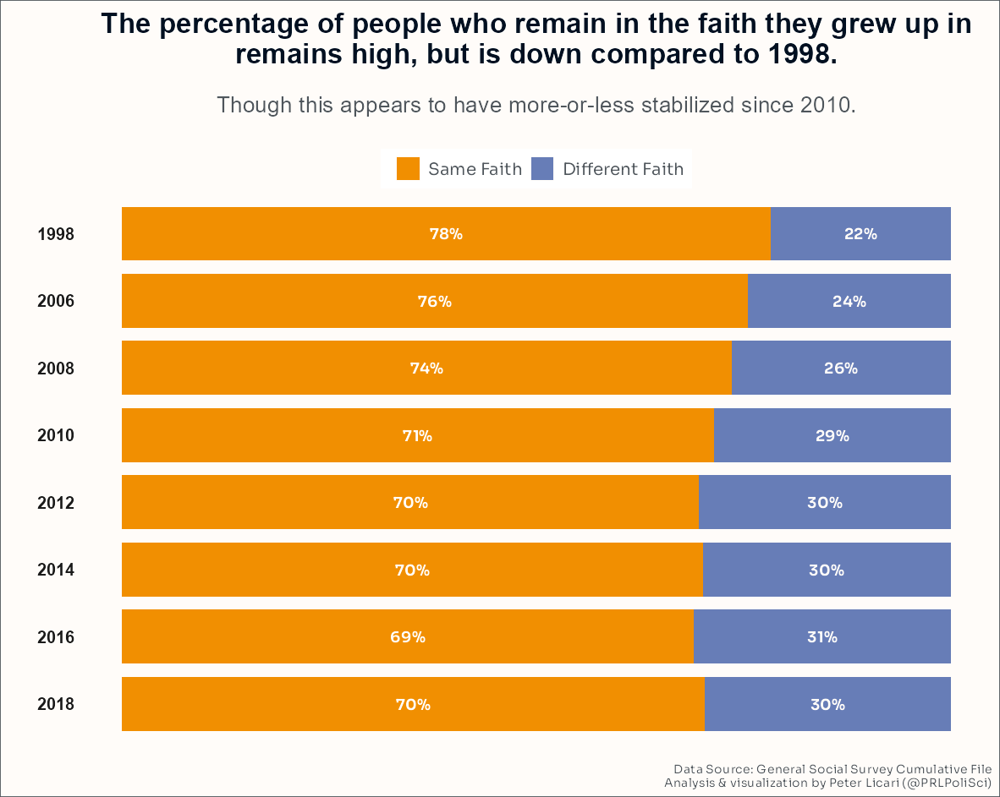
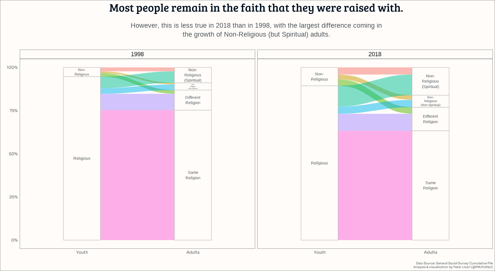
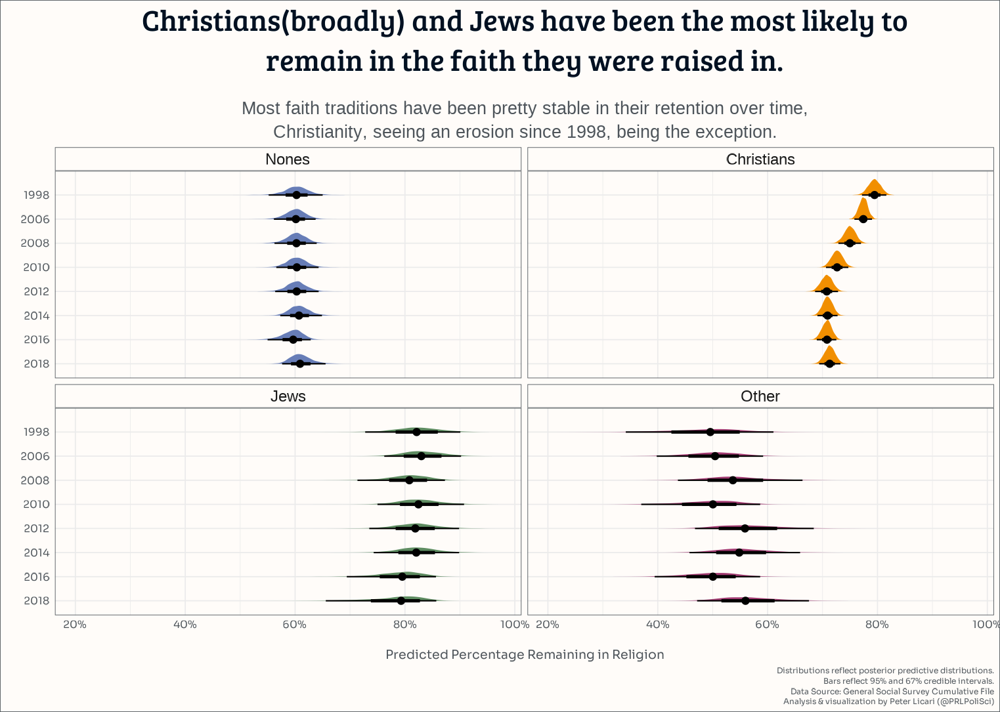

religion-change-freq-over-time-24
This post was inspired in part by Ryan Burge’s post “Can You Ever Really Leave Religion Behind?” on his incredibly insightful (and appropriately named) Substack Graphs About Religion. In the process of writing this, I came to realize/remember that he had an additional post titled “How Many People Leave Their Childhood Religion?”. Our posts have slightly different emphases, but I do strongly recommend checking out those posts (or at least the previews of them) and his whole site. It’s an incredible resource for people who want to understand the intersection of religion and US Politics.
If nothing else, my personal spiritual background never fails to serve as a conversation starter.
As I frequently put on my social media bios, I self-identify as a “bad Quaker”. The pejorative modifier serves a couple of functions: I like to think that it keeps me humble and it signals that, though I’m very serious about my faith, I try not to take myself too seriously. But I wasn’t raised Quaker, “bad” or otherwise. I was baptized Lutheran, in the tradition of my mother and her parents. My father was raised Catholic—he was actually an alterboy growing-up. Thanks to a mix of personal loss and a bad bout of teenage angst that I confused for a sophisticated personal theology, I spent a good number of years as at least an agnostic1. Around my 17th birthday, though, I had a pretty abrupt personal revelation. It acted as an inflection point; not in that it resulted in an immediate change but that it immediately shifted my spiritual trajectory into one that, eventually, after much investigation and self-reflection, meandered its way to Quakerism—where it’s contentedly orbited now for a few years.
I am an anomaly. This, I’m sure, isn’t a terrible surprise to anyone who knows me—even in passing. But my spiritual journey is particularly weird. For one, there isn’t even a good recent estimate on the numbers of practicing (or even self-identifying!) Quakers in the United States; it’s that uncommon. But not only is where I wound-up weird, that I wound-up in a distinct religious home than I started from is odd. A May 2023 Pew Research Center study showed that about 80% of US teens share the same religious beliefs as their parents. At the same time, oceans of ink has been spilled about the rise of the “Nones” (AKA, the religiously unaffiliated, agnostics, and/or atheists) and the increase in secularism in the United States. And here I am, somehow adhering to neither of these general patterns.
So I wondered (again, not for the first time) just how weird am I?
How many people have remained in the same spiritual tradition as the one that they were raised in? Of those who have changed, how many have wound up in a different faith versus no longer identifying with a religion? And has this tendency changed over time in the United States?
To spoil the answer a bit: The vast majority of US adults (close to 70%) stay in the same religious tradition as the one that they were raised in. However, this has shrank over the last 20 years. The vast majority of people who leave the faith they were raised in do not join another religious tradition. They merely wind up leaving organized religion (but, interestingly, still tend to identify as spiritual). Interestingly, those who were raised without a religion are among the least likely to remain as “nones.” Christianity and Judaism, it appears, are better at “retaining” believers than other faiths in the US.
Data
One of the longest-running and highest-quality data sets pertaining to American’s beliefs and behaviors (spiritual and otherwise) is the General Social Survey—also known as the GSS. The GSS began fielding in 1972 and has 34 waves of data on hundreds of questions across thousands of respondents. And what makes it particularly excellent for my purposes here is that it not only asks about respondent’s current religion but also the religion they identified with (if any) as a child. For a while (1973–1996) the only options available to respondents for both questions were “Protestant”, “Catholic”, “Jewish”, “None”, and “Other.” In 1998, this list expanded to also include “Buddhism”, “Hinduism”, “Other Eastern”, “Muslim/Islam”, “Orthodox Christian”, “Christian”, “Native American”, and “Inter-Nondenominational.” However, the sample sizes for these additions are consistently pretty small: we should take associated estimates with quite a few grains of salt.
Starting in the same year, the GSS also started asking2 whether people identified as “Very”/“Moderately”/“Slightly” spiritual or “Not spiritual at all.” This allows us to not only split out those who say “no religion” because they don’t firmly fit into a particular set of institutions, communities, and beliefs but because they don’t believe in anything “supernatural”, in the most literal sense of the word.
The GSS is publicly available for people to download and analysis. For ease, I’m using Kieran Healy’s {gssr} package to download the data so that I can analyze and visualize it using R.3 The code for this analysis, for anyone curious about it, can be found on my github.
So to answer my question, I’ve downloaded the GSS’ cumulative data file, which contains harmonized data across all 34 waves. I’ll look at both 1998 and 2018 (the most recent data on this question at time of writing), because those two waves are about a quarter-century apart4. I’ll look at how many people in both waves have remained in the same faith. I’ll then look to see where those who have shifted have wound up: We’ll see how many folks started identifying with a different faith, how many stopped identifying with religion but remain at least “moderately” spiritual, and how many have exited the religious and spiritual practices of their youth.
Results
How different is 2018 compared to 1998?
In 1998, about 78% of respondents reported being in the same faith tradition as when they were children. In 2018, this was about 70%. However, as these charts show, this estimate has been relatively stable since 2010—and the dip seen between 2008 and 2010 may be the consequence of a methodological change in the GSS between those years. So while it’s definitely lower since 1998, it may be that this trend has stabilized for now.

Let’s see if the folks that are no longer identifying with the faith tradition that they grew up with tend to switch religious affiliations or pivot towards having no affiliation.
The chart below is a combination of two alluvial charts tracking each respondent’s religious identity over time for the 1998 (left) and 2018 (right) waves of the GSS. On the left-hand side of each chart are two categories reflecting people’s faith in their youth: they can either belong to a religious tradition or belong to no tradition. On the right hand side are 4 categories. People can belong to the same religious tradition as their youth, belong to a different religious tradition, belong to no tradition but self-identify as “spiritual”, or belong to no tradition and self-identify as “not-at-all” spiritual. Every individual “stream” reflects an individual respondent—and the ways they flow together demonstrates the general religious tendencies of US adults in 1998 and in 2018.

We can definitely see that, in both 1998 and 2018, my kind of spiritual trajectory is definitely the outlier. Only about 9% of respondents in both years are self-identified with a religious tradition as both youth and adults but with different traditions. While small, it’s larger than the proportions of people going from having no religious tradition as youth into having one as adults—which was pretty constant at around 2–3% of respondents across waves.
The vast majority of people are remaining within the same faith tradition as what they grew up in—but among those who identify with a specific religious group, the number has shrank pretty substantially. In 1998, this comprised 75% of US adults, but in 2018 it was 63%. While this shrank, there was growth in the proportion of people who were nones as kids and then remained nones as adults—this about doubled from 3% to 6%. Another (relatively) large change in the data is from those who went from having a faith tradition in their youth to not having one as adults. In 2018, this was roughly 16% of respondents. But in 1998, this was only about 9%.
Interestingly, though, if we break out this group into those who do and do-not report feeling spiritual as adults, we can see that the growth is mostly concentrated among those who went from identifying with a religion to not identifying with a religion but still identifying as at least “slightly” spiritual. In 1998, this was about 7% of US adults but in 2018 it was about 12%. The proportion going from identifying with a faith to not while also identifying as “not spiritual at all” as an adult was 3% in 1998 and about 4% in 2018.
The typical spiritual journey in the US, then, is one where folks tend to stay within the same religious tradition as the one that they were raised in. Conversion from one faith to another is rare and really hasn’t become more or less popular in the two decades we’re looking at here—though it is a bit more common than going from not being raised in a religious tradition to joining one. If someone is no longer a part of the religion in which they were raised, it’s most likely that they’ve stopped identifying with a religious tradition altogether. However, that really hasn’t stopped most of them from still identifying as at least a bit “spiritual.”
Are Some Religious Traditions Better at Retention?
One thing I began to wonder as I set out on this investigation is if certain faith traditions are better at having their membership, well, keep the faith5? Are, for example, those who were raised Christian (broadly) more or less likely to keep identifying as such compared to, say, those raised as Jewish, those raised with no religious affiliation, or those raised with another affiliation6?
I used a Bayesian multilevel logistic regression model to investigate this question. Those who know what that jumble of jargon means are likely divided between thinking it the obviously correct approach or thinking of it as like eradicating an ant colony by pouring molten aluminum into it7. For the 95% of people who don’t know what the hell I just said, though8: this is a statistical model that will allow me to compare the mean probabilities of religious-identity churn by group throughout all 8 waves of data that I’m analyzing. It has some pretty desirable bells-and-whistles too: Namely the ability to see if these mean probabilities are changing across time9.
The chart below visualizes the model’s estimates. Each distribution reflects what the model predicts is the probability that someone raised in each of the four groups remains in the same religious tradition that they were raised in as adults There’s a distribution for each of the four groups and each of the eight years. The size and spread of these distributions reflect the uncertainty around the predicted probabilities. The mean of these distributions reflects our expectation. For example, given our data and prior assumptions, we can assume that, in 1998, the probability of someone being raised Christian and remaining Christian is between 77% and 82%; for someone raised Jewish it’s between 72% and 90%. In 2018, however, it is between 69% and 74% for Christians and between 66% and 85% for Jews.

There are a few things that stand out to me here. First, in all years, those reporting being raised Christian and Jewish are about equally likely to report remaining within their faith traditions as adults. Indeed, those I’ve bucketed into “other” tend to be the least likely to stay within their specific faith tradition, whatever it may be. Both Christians and Jews are more likely than those raised with no religion and those raised with another religion to remain such as adults. However, Christians are really the only group that’s seen a decline in retention rates—or at least the evidence is strongest there, there may be some diminishment for Jews but it appears less likely. The others are pretty stable across time.
So What Have We Learned?
I would say that we’ve learned that I am indeed pretty weird—but I don’t know if that counts since “learning” something implies initially believing something different.
More seriously: We’ve learned that, even amidst the nation’s rising secularization, the vast majority of people who are raised in a particular faith tradition remain within that tradition. That’s been the case since 1998 and is still the case today. However, it’s also true that we can still see the aforementioned secularization in the data: While the majority of people stick with what they’ve grown-up with, fewer people did so in 2018 than in 1998. And most of these people who leave the religion of their youth are not joining a new ones. In 1998, someone raised with a religious tradition who changed was about equally likely to go into a new tradition as they were to leave organized religion. But 2018, People were about 50% more likely to leave organized religion entirely than join something new. But, interestingly, more than 2/3rds of those self-identifying as having no religion say that they are spiritual.
Looking at specific faith traditions (well, at least as specific as the data will allow), Christians and Jews are the most likely to remain in the religion of their youth. Only about half of those raised in a different religion remained in that faith as adults. However, American Christianity’s “retention rate” has eroded over time—and is really the only group that we can confidently say has done so. The rest appear more stable.
But stability in the social sciences is never a guarantee. Hopefully, a few decades from now, another intrepid dork will be able to look back from now through then and see how (if) any and all of this has changed. Because if there is one thing that my personal religious trajectory does embody it’s the broader truth that the only constant is the possibility of change.
Footnotes
Leave it to the survey nerd to find a way to make an ordinal scale based off anything.↩︎
At least, for the first time. While they’d continue the expanded set of potential faiths people could identify as, they did not begin consistently asking the spirituality question until 2006.↩︎
Specifically, I’d like to call out how helpful his overview article is.↩︎
I apologize for the violence I’ve just inflicted on everyone reading this statement who was alive during both of those time periods. I too just had a miniature personal crisis about the passage of time.↩︎
Thank you, thank you. I’ll be here all week.↩︎
I am aware, of course, that there is a ridiculous amount of diversity within the “other” group here. I’m not pooling these folks together because I think, like, Muslim rates of retention are necessarily the same as Buddhist, Hindu, Sikh, Native American, Wiccan—whatever. I’m pooling them together because the sample for these is simply too small. There are 153 Muslim respondents total. Which, as small as it is, is still 50% more Hindu respondents. Answers on rates of retention for these faiths will have to wait for better data, unfortunately.↩︎
And to these latter folks I say: it probably works as well as whatever “typical” method most folks would reach for instead, but I happen to have the necessary materials to do it this way on hand and I like the shape of the end product.↩︎
Or maybe I should go with 89% here?↩︎
For that technically-minded 5%: I’m using the groups as outlined above: Christian, Jewish, Other, and None—with “None” set as the reference category. The model has random intercepts set for years with nested random slopes for religious group membership. I’m setting the priors in the logit model to a normal distribution with a standard deviation of 2.↩︎